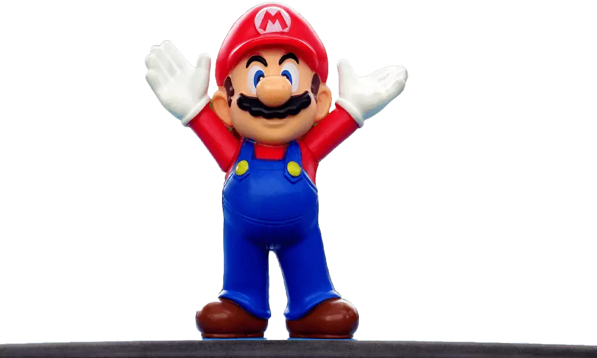

Super Mario is a series of games created by Japanese electronic game manufacturer Nintendo Company, Ltd. in 1985. This game is 35 years old and developed in 3D print. Super Mario is the franchise of the popular game Mario Bros. This game was so exciting and addictive; more than 40 million copies have been sold until now.
This game is the story of two Italian plumber stars Mario and Luigi, who find themselves in the Mushroom Kingdom trying to retrieve Princess Toadstool from the wicked King, Bowser. In the original Mario Bros game, Mario is the pilot, and lungi is added role. This game has many levels, and each level is filled with a thrilling evil character.

In the Super Mario game, each level starts in separate settings, some in prisons, and some overhead ground, with battles facing Bowser at the end of castle levels. Once the Bowser beat, a Mushroom Kingdom citizen informs Mario that the princess is in a different palace.
The game ends with the failure of the real Bowser and the release of Princess Toadstool. This game was inspired directly by many games, Such as Super Show (1989 and Super Mario Bros (1993).
Super Mario is an electronic platform game that includes climbing, jumping, and swimming to reach the final target. This game makes it the best business video game of all time, as per the Guinness Book of World Records. It was the first video game in the world that has come in video or movie format. After 1983, many games have released starring Bob Hoskins, John Leguizamo, and Dennis Hopper. Super Mario is the first video game that rescued the video game industry. This game has appeared in more than 200 titles.
Top facts about the Super Mario game
- Super Mario has just celebrated its 35th anniversary.
- Mario and the lungi were the superstars of the game. Nintendo declared 2013 as the Year of Luigi.
- Mario doesn't have any last name, this fact has been asked many times, but they said he doesn't have one.
- Even Nintendo is not making any new characters these days. They are busy creating new ones from old ones. They are expanding Mario out to animated movies and theme parks.
- Mario and pals were going to fight against each other in Olympics 2019. But it was postponed due to the pandemic. Do you want to see them competing?
- Mario is the name inspired by the name of a real estate developer in Washington.
- During the 35 years of the Mario game journey, Mario has played more than 12 different occupations. He started with a carpenter in the first video game.
- Super Mario has set and broken many world records, Such as Mario is the longest-running video game character.
- Mario has played the character of Mario more than 255 times in games.
- Mario's birth year is 1981.
- Goombas were the last opponent attached to Super Mario Bros.
- A copy of Super Mario Bros. freshly traded for over $100,000
- Super Mario Bros. is saved on a 256-kilobit cartridge, and that's a fact.
- Early Super Mario used 2D printed later the whole series was retelecasted in 3D form.
Why is Super Mario so popular and successful game?
Super Mario Bros. is the biggest video game franchise of all season. More than 222 million copies have been sold, incredible! Isn't it? The early video game industry was going through hell, and Super Mario has saved the video game industry single-handedly. So it's not surprising if this game is too popular.
The world was first introduced with "GAME OVER" just because of the Super Mario game. And the effect of this game used to be seen in all ages people. This game has given a chance to many people to relax for some time.
Top reasons for the Super Mario game that has brought a radical change in the video game industry
A novel game
Super Mario is so unique and popular amongst people because of its pattern and the format of the game. Many games have come over after the iconic game Super Mario. Every single game has followed the unique format to run their games.
A unique way to play the game
"Super Mario Bros." was such an active platformer because it didn't just drive you into a provocation like many other games published at the time. The challenge level rose during the game in a more lenient tone for players to adapt it. The opening levels in the game have been constructed so that they will help you build your necessary skill to win upcoming levels.
Protecting the video game industry
Can you imagine a world without video games? Early this industry was not doing so well. Many games used to release, but these were not that famous and addictive. After that, Super Mario debuted in the industry, and everything changed suddenly. This game grabbed the world's attention because of its unique way to play the game. Technology was not as developed as today, the first game series in 2D. But still, this game was successful in protecting the video game industry. So, you cannot forget the contribution of Super Mario.
If you are a game enthusiast or want to start a game career, you can always polish your skill with the spacebar counter tool. The space bar clicker is the tool that helps you to measure your spacebar click in a given time interval. Must try!
Character Mario was widely accepted.
There are so many characters in the Super Mario game. Still, the main hero was Mario, and we cannot forget lungi. There Mario's brother was so popular that they were universally accepted. The company has never tried to put the character into a single frame. They have always portrayed Mario differently, and that's why Mario has played more than 12 occupations.
Bottom Line:
Super Mario is one of the most loved video game series. It has created a special place in our hearts, and therefore it has been more than 35 years, and we still cherish the memories of our Mario.